Product Design · UX/UI
Logistics CRM
A CRM for managing transportation operations and the day-to-day workflow of a logistics team.
Goal
Create a practical working interface for processing shipments and handling multiple tasks in parallel.
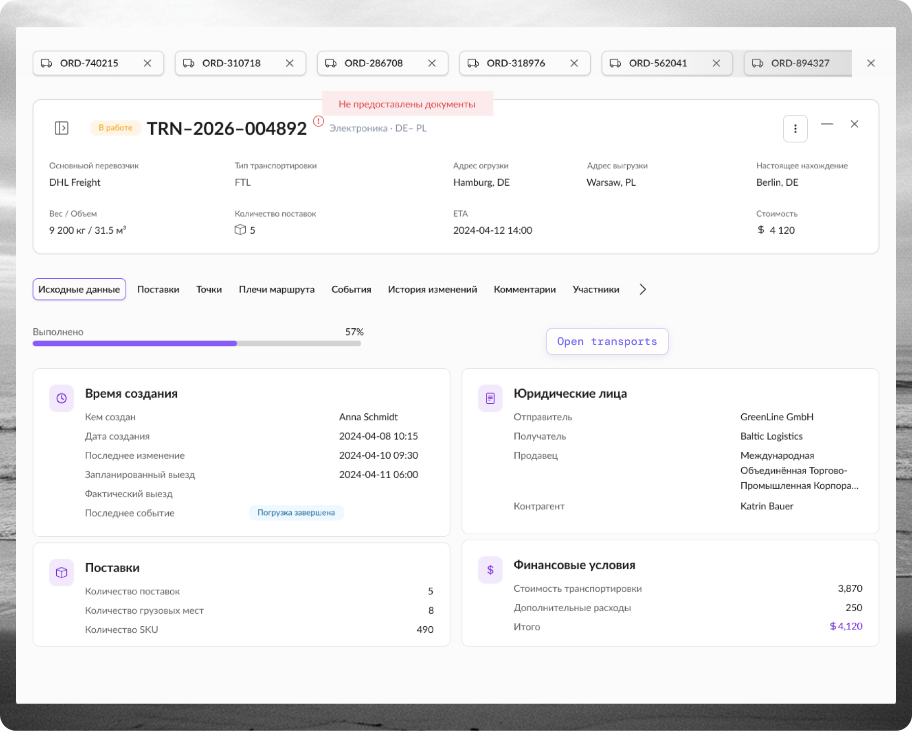
Status Workspace Transportation cardUX
- Requirements analysis
- User flows
- Transportation workflow structure
UI
- Transportation card
- Working tabs
- Interaction patterns
Collaboration
- UI Kit & components
- Interactive prototypes
- Iterations based on team and stakeholder feedback
What I designed
01
Transportation card
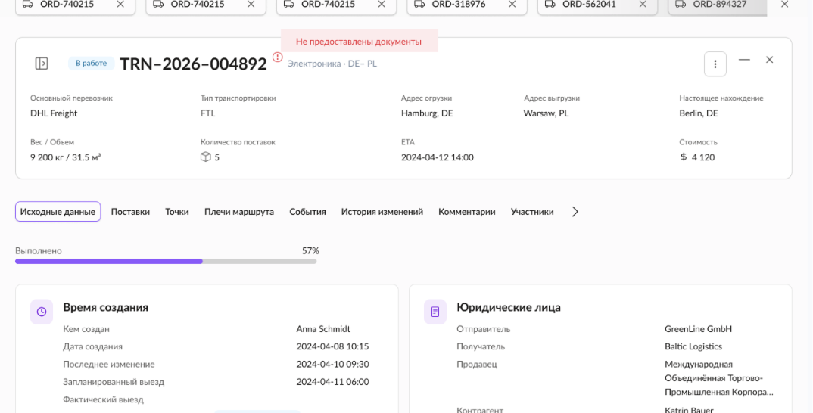
Organize a large amount of information and operations into a compact working space.
02
Multiple transports
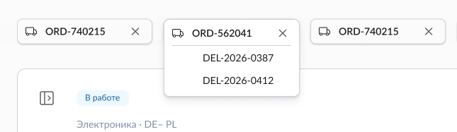
Allow users to work with several active transports without losing context.
03
Status updates
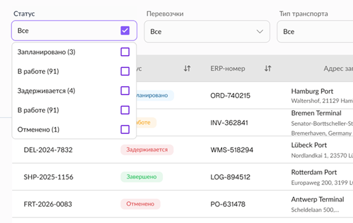
Make transportation status changes clear, predictable and visible.
Transportation card
A transportation card contains a large amount of information and operations. The goal was to make it practical for everyday work, while keeping the interface compact and focused.
What I designed
-
01
Structured tabs
Each working area is organized into a dedicated tab.
-
02
Compact overview
Key transportation information and current status remain visible regardless of the active tab.
-
03
Contextual actions
Actions are placed next to the information they relate to.
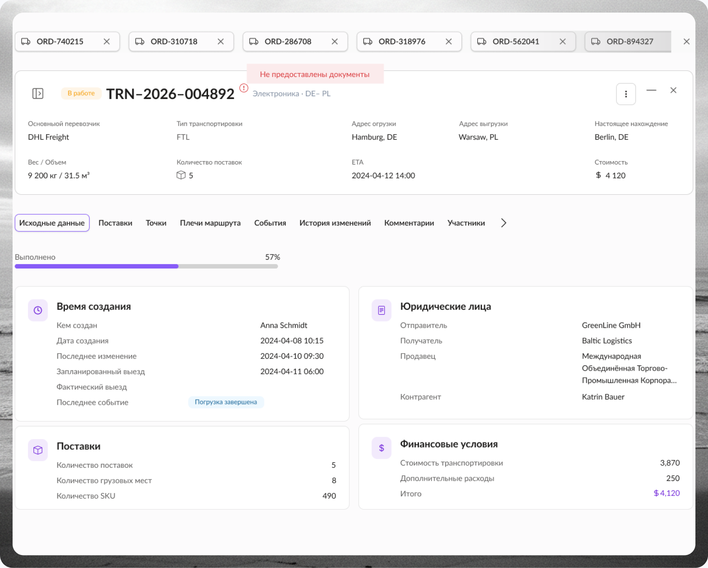
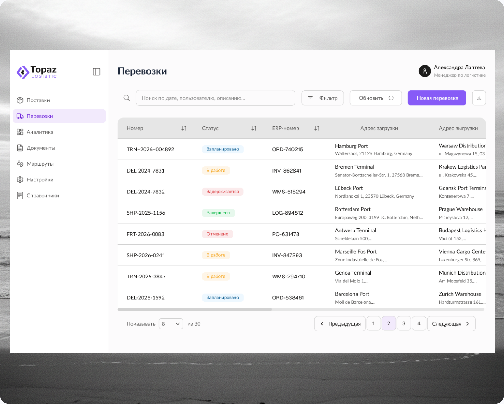
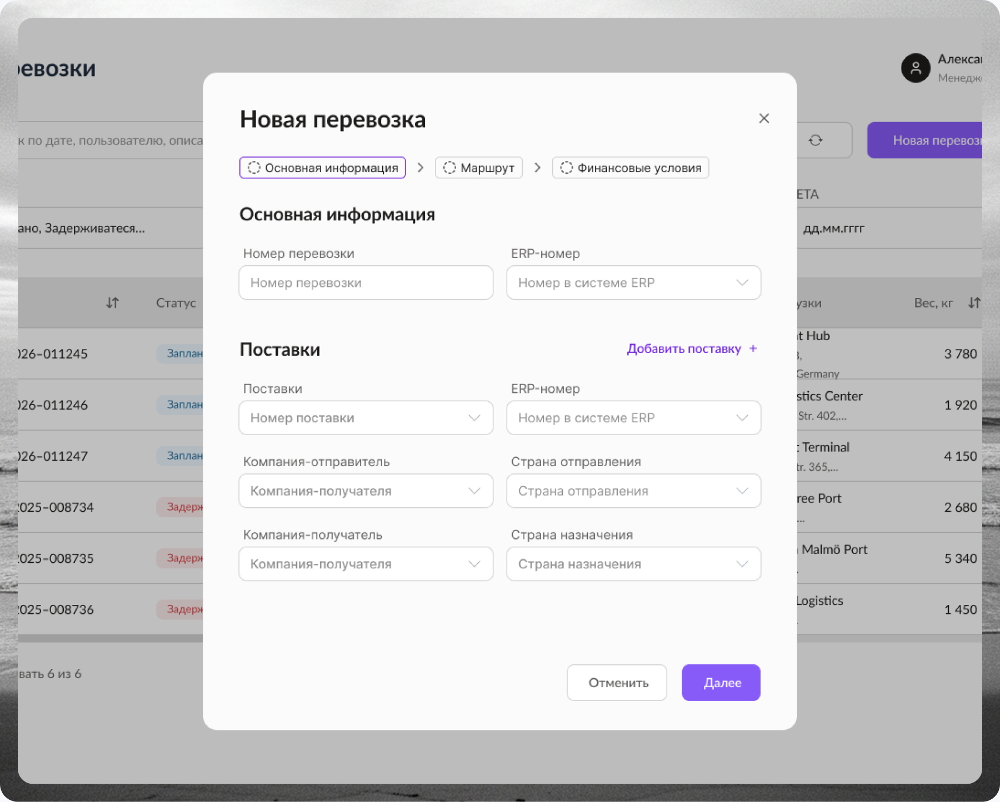
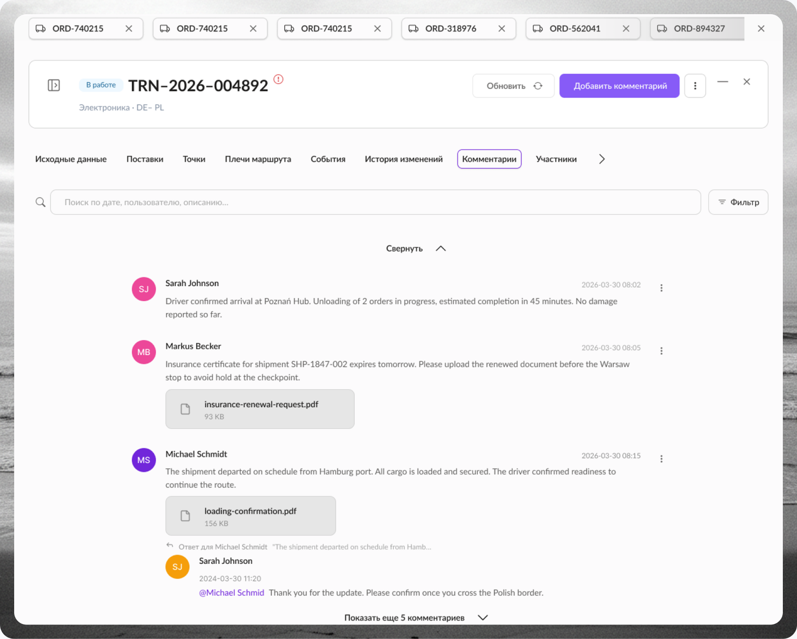
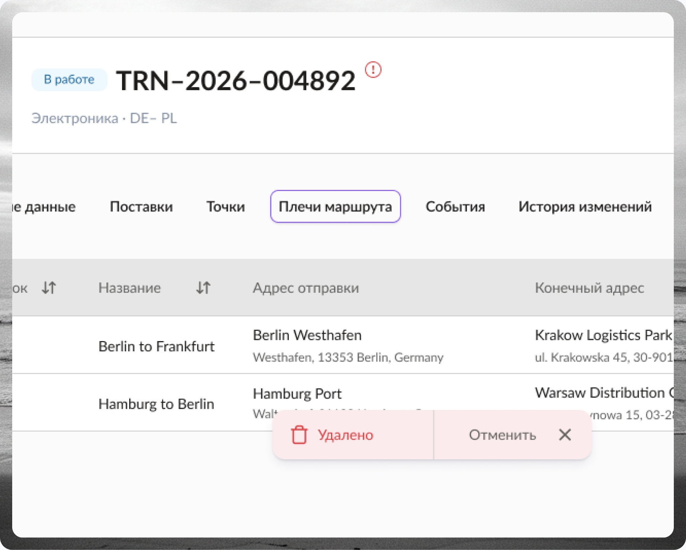
Before
Information-heavy screen
- Route & dates
- Driver & vehicle
- Cargo details
- Documents list
- Payment info
- Notes & history
- Status actions
- Contact details
Solution
Structured transportation workspace
Result
The transportation card became a working space rather than just a place to store information.
Preserved context
Users can move between tasks without losing the main transportation context.
Contextual actions
Actions can be performed directly within the relevant section.
Scalable structure
New information can be added to dedicated areas without increasing screen complexity.
Working with multiple transports
Operational work rarely involves a single transport at a time. Users may need to open multiple transports, compare information, switch between tasks, and return to something they were working on earlier. With standard list-based navigation, this can lead to repeated searching and loss of working context.
What I designed
-
01
Open Transports Panel
I introduced a dedicated navigation layer that displays all currently open transports and allows users to switch between them quickly.
The panel keeps active work accessible and separates finding a transport from switching between transports that are already open.
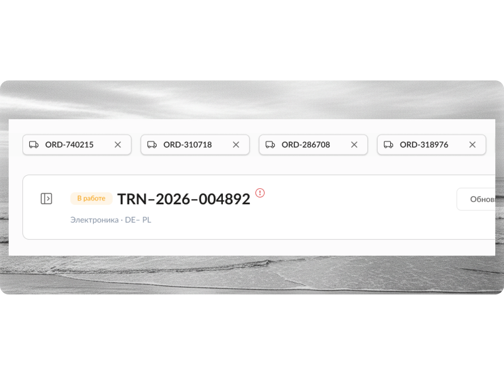
01
Search
02
Open transport
03
Work
04
Switch
05
Continue
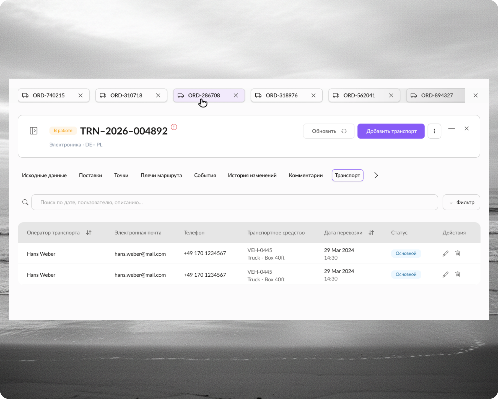
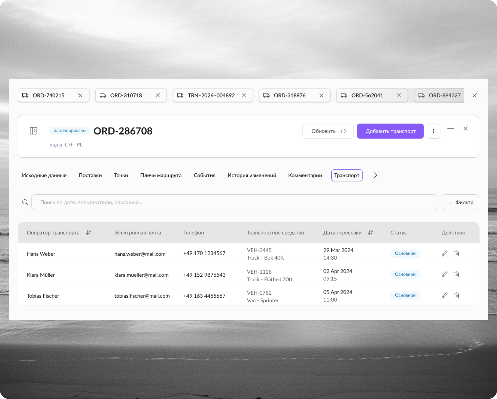
Result
Users can work with multiple transports while keeping their working context.
Open transports
Users can work with multiple transports without repeatedly returning to the main list.
Preserved context
The current working context remains available.
Fast switching
Users can switch between active transports without returning to the main list.
Transportation status update
A transport status represents its current operational state and determines what the team can do next. Changing the status therefore needs to be clear and predictable. Users should immediately understand which state is active and what happened after the change.
What I designed
-
01
State transition flow
I defined the interaction around a simple sequence
The interface clearly displays the current status and allows users to change it directly within the transportation context.
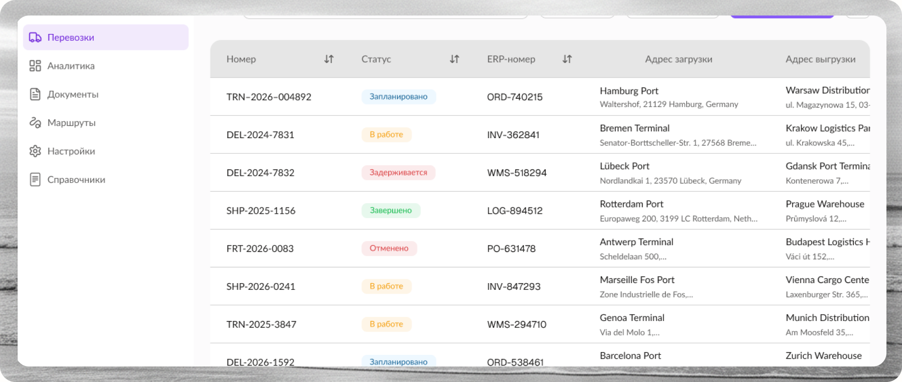
Current state
In Transit
Available action
Update status
New state
Delivered
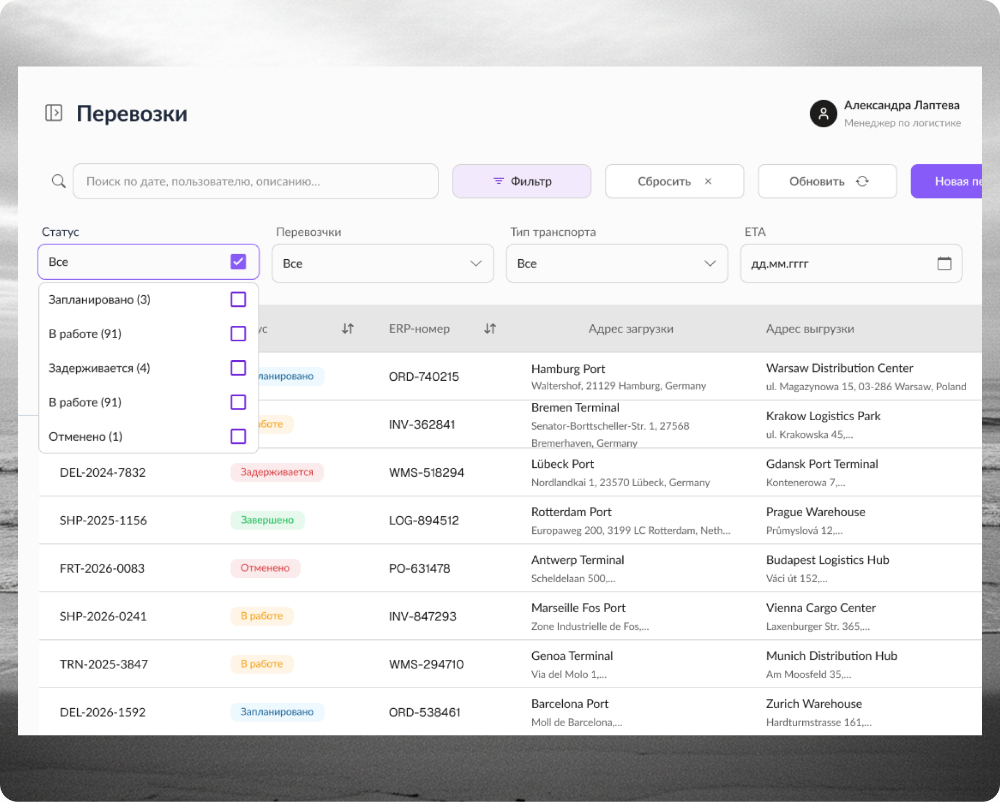
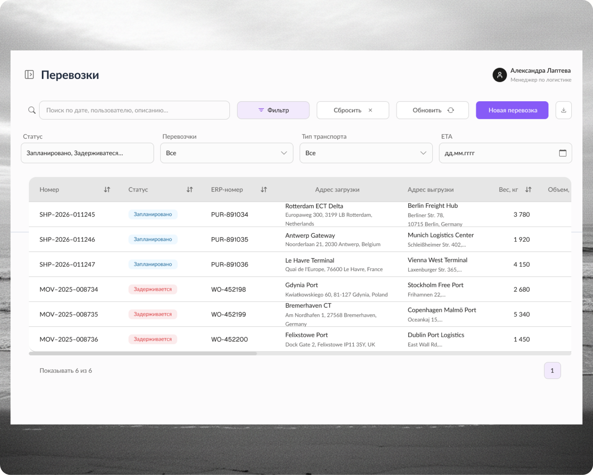
Result
Users understand the current state, the available action and what happened after the change.
Transparent status changes
Immediate feedback
Predictable next actions
What changed in the workflow
01
Structured workspace
The transportation card became a unified working space — not a flat list of fields.
02
Parallel work
Users can work with multiple transports without repeatedly searching for them.
03
Predictable status flow
Status changes became a clear and controlled interaction with immediate feedback.
Constraints
The project was at the MVP stage, so full UX research and quantitative metrics were not conducted.
Design decisions were based on:
- 01 Business requirements
- 02 Process analysis
- 03 Team discussions
- 04 Stakeholder feedback
- 05 Iterative design